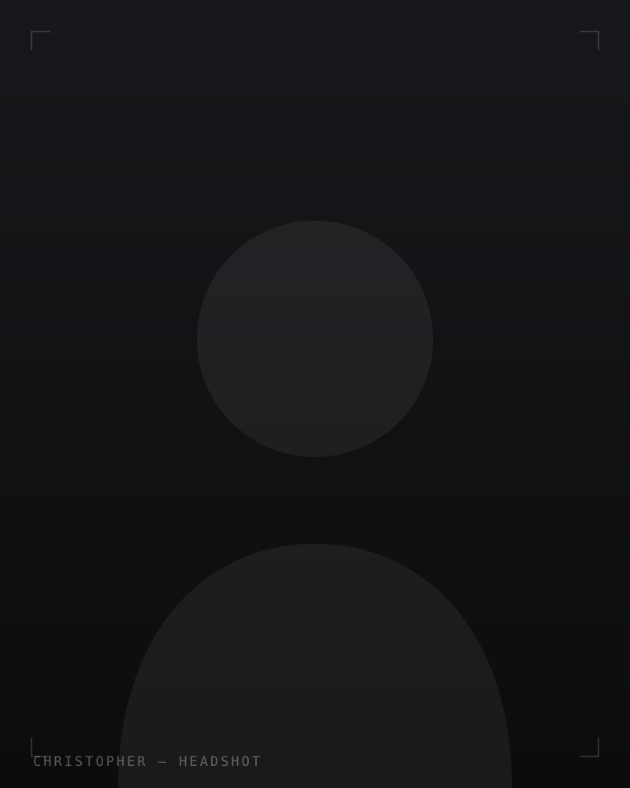
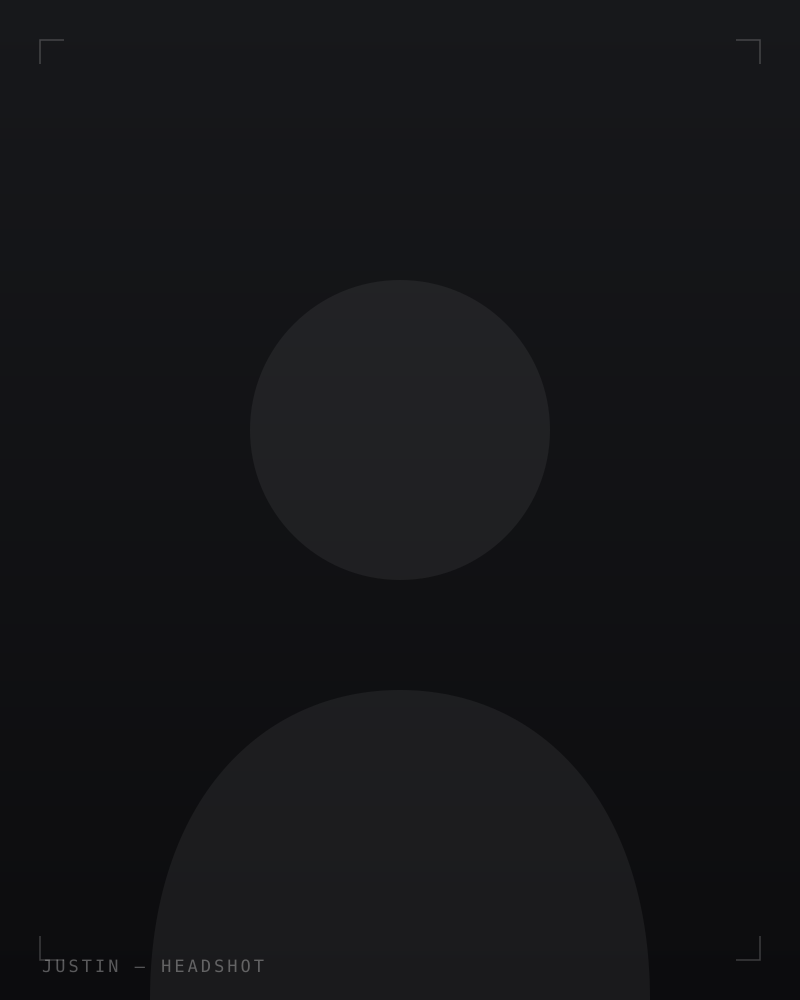

Athletes
From academy to pro. Grow a following that scouts and sponsors can't ignore, with content that shows you at your best, every week, not just on highlights day.
Get seenSports media agency · West Sussex
Journeys captured. Outcomes remembered. Content that grows your following, attracts sponsors and puts you in front of scouts, for athletes, teams and brands across West Sussex & the South Coast.
Sports photography & video
Match days, showcase tapes and brand shoots, cut for the platforms where careers get noticed.
What we do
From academy to pro. Grow a following that scouts and sponsors can't ignore, with content that shows you at your best, every week, not just on highlights day.
Get seenMatch days, squad shoots and season stories. Content that fills stands, keeps sponsors renewing and makes your club look like the level you're chasing.
Cover your seasonKit, campaigns and community. Activewear, gyms and sports brands. Content that looks like it belongs on game day, because it was shot there.
Build your campaignWho we are
We met at school around ten years ago, over Media GCSE projects and on the basketball court, before life took us in different directions.
Christopher stayed in the creative world, building a career in sports broadcasting before going full-time freelance with Odero Productions. Justin went into finance and the corporate world. In late 2024 he picked up his first camera for a trip to the Philippines, and it soon started coming with him to basketball courts and sporting events.
That camera brought us back together. Catch-ups turned into ideas, and JOLERO followed.
Today we're a sports media studio based in West Sussex, working across the South Coast and beyond. We both shoot and edit. Christopher's strength is capturing the action and finding the shot. Justin's is shaping the final piece through creative direction, editing and colour grading. Our work covers MMA, football, boxing, fitness, basketball, tennis and more.
Two paths, one passion for sport. Every frame, built together.


FAQ
Any sport. Between us we've shot football, American football, basketball, baseball and tennis, and the approach travels: rugby, cricket, boxing, athletics, the gym. If it moves, we can shoot it.
Yes. Activewear, kit, gyms, events and campaigns. Sports brands hire us because the content is shot where sport actually happens, not in a studio pretending.
We're based in West Sussex and shoot across the South Coast: Brighton, Chichester, Portsmouth and everywhere between. Further afield for the right project: tell us where you play.
Fast enough to post while the result still matters. We agree a turnaround before every shoot, and social-first cuts come first.
No. Academy, semi-pro, Sunday league, fight camps, gym athletes: if you're serious about where your sport is going, that's enough.
You get full use of everything we deliver across your own channels. We may feature selected work in our portfolio unless we agree otherwise.
Fill in the form below. It takes about a minute. We reply to every serious enquiry within 48 hours.
Contact
Takes about a minute. The more we know, the better we can help.
Received.
Thanks. We'll come back to you within 48 hours. In the meantime, follow @joleromedia to see what we're shooting this week.